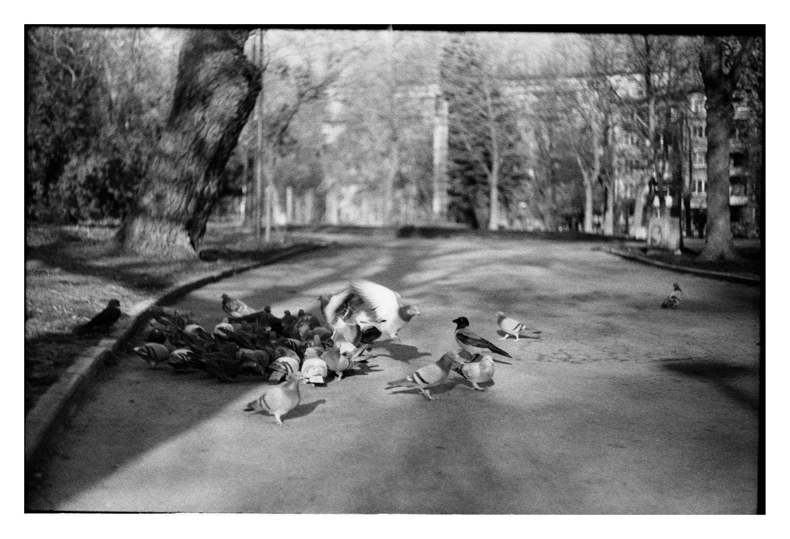

Не всички гълъби са сиви
Най-голямата скорост на състезателен гълъб,записана от
Рекордите на Гинес,е около 177км/ч.
Най-едрият вид са коронованите гълъби,които средно тежат
около 2кг.
Странстващият(Пътуващият) гълъб изчезва през 1914г.Този вид
вредял на земеделието и повечето му представители били избити.
Птицата Додо всъщност е от семейство .Тези птици били убивани от
датските колонисти,които населили Австралия, и от
животните(кучета,котки),донесени от тях.
Зелен гълъб от Сао Томе-ярко зелен вид,ендемичен за остров Сао
Томе
Зелен гълъб с розова шия-Разпространен в
Индонезия,Филипините,Мианмар и др.За разлика от повечето гълъби
не гука,а издава свирукащи звуци
Никобарски гълъб-Някои от държавите ,в които е разпространен са
Индия,Тайланд,Индонезия,Виетнам.Мигрира от остров на остров.Има
интересен външен вид с ярки цветове.Най-близък по ДНК до птицата
додо.
Земна гугутка-Най-малкият северноамерикански вид с размери на
врабче.Може да побере голямо количество малки семки в своята
воденичка(около 2500).Издава бръмчащ звук с крилете си.
Коронован гълъб-На английски е кръстен на кралица
Виктория(Victoria crowned pigeon),подобен е на паун и тежи
средно 2кг.
